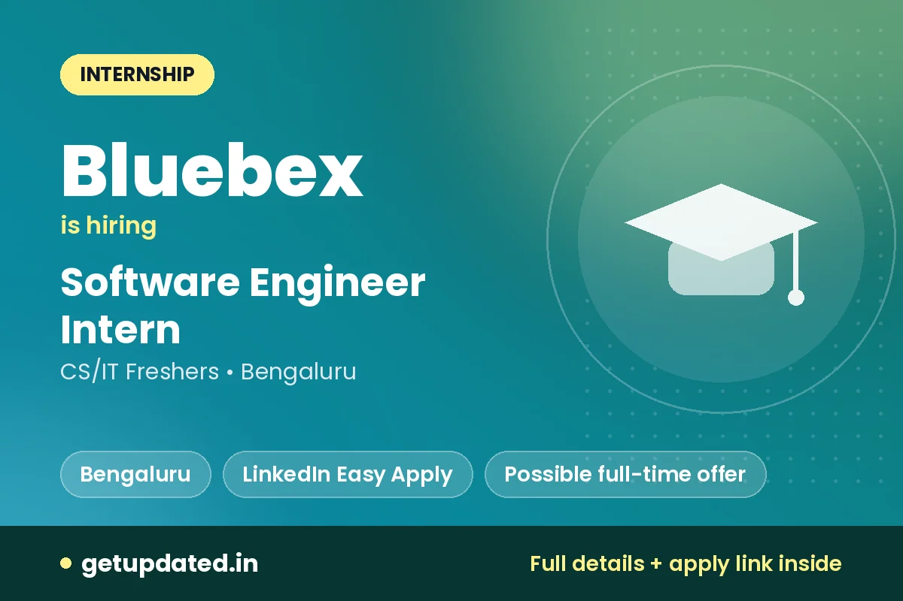
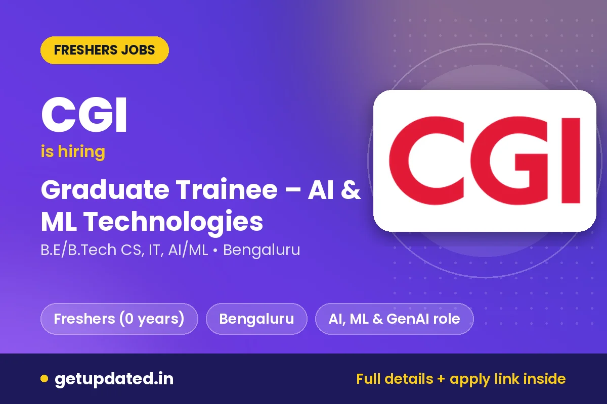

Honeywell Aerospace has opened an internship for an Embedded Engineering Intern in Bengaluru, aimed at students who are still pursuing a bachelor's degree. The role was published on the employer's own LinkedIn page and applications run through LinkedIn Easy Apply, so there is no long form to fill.
If you are in an Electrical, Electronics or Computer Engineering programme and enjoy low-level programming, this is a useful opportunity. You would work on embedded software and firmware with experienced engineers, join code reviews and see how real aerospace-grade products are built and tested.
The posting does not state a stipend, duration or last date. Treat it as a role to apply for early rather than one to think about for weeks.
Table of Contents
- Quick Highlights
- About Honeywell Aerospace
- Role Overview
- Key Responsibilities
- Eligibility Criteria
- Stipend and Duration
- How to Apply
- Selection Process and Likely Interview Topics
- Preparation Plan
- Common Mistakes to Avoid
- Official Links and Final Checklist
- Final Takeaway
- Also Read
- FAQs
Quick Highlights
| Particular | Details |
|---|---|
| Organisation | Honeywell Aerospace |
| Role | Intern Bachelors Embedded Engineering |
| Type | Internship |
| Location | Bengaluru, Karnataka, India |
| Eligibility | Enrolled in a Bachelor's programme in Electrical Engineering, Computer Engineering or a related field |
| Must-have skill | Basic knowledge of C or C++ |
| Apply mode | LinkedIn Easy Apply |
| Stipend | Not disclosed |
| Last date | Not disclosed |
Must-haves are just two: current enrollment in a relevant bachelor's degree and basic C or C++.
About Honeywell Aerospace
Honeywell is a global technology and manufacturing company. Its aerospace business is listed on LinkedIn under Aviation and Aerospace Component Manufacturing. The posting describes Honeywell as a global technology leader that delivers solutions to improve quality of life around the world.
For an engineering student, a name like this matters because embedded software sits inside many products in this industry. Even a short internship gives you a view of structured development: requirements, code reviews, testing, debugging and documentation. Those habits are valued across the electronics, automotive and aerospace sectors.
Role Overview
The job title is Intern Bachelors Embedded Eng. According to the posting, you will gain hands-on experience in the design and development of embedded software solutions. You will work alongside experienced engineers, contribute to real projects and build your technical skills in a supportive environment.
The employer says your work will help the development of embedded systems and contribute to project success. The LinkedIn listing shows the employment type as Full-time and the seniority level as Internship. Because the title and seniority both say internship, this article treats it as an internship. Confirm the exact terms with the recruiter if you are shortlisted.

Key Responsibilities
The posting lists these duties:
- Assist in the design, development and testing of embedded software and firmware
- Collaborate with engineers to support ongoing projects and tasks
- Participate in code reviews and contribute to improving software quality
- Assist in troubleshooting and debugging embedded systems
- Contribute to documentation and technical reports
In practice, expect to start with smaller tasks, such as reading existing code, writing test cases or fixing minor bugs. Do not expect to own a full module on day one. The phrase "assist" appears often, which suggests a learning-focused role with guidance from seniors.
Eligibility Criteria
Must have
- Enrollment in a Bachelor's degree programme in Electrical Engineering, Computer Engineering or a related field
- Basic knowledge of programming languages such as C or C++
Valued, but not mandatory
- Pursuing an advanced degree in Electrical Engineering, Computer Engineering or a related field
- Experience with embedded systems or microcontroller programming
- Strong problem-solving skills and a passion for innovation
The words "enrollment in" mean you should be a current student. Fresh graduates who have already finished their degree should read the posting carefully before applying. The listing does not mention graduation year, batch or minimum percentage, so do not assume any cut-off.
Students from ECE, EEE, CSE and similar branches are the natural fit for "a related field", but the final call is Honeywell's. If your branch is slightly different, show your embedded or C/C++ project work clearly on your profile.
Projects count
Experience with microcontrollers is listed as valued. A small project on Arduino, STM32, ESP32 or a similar board, even a college one, can set your profile apart.
Stipend and Duration
The posting does not disclose the stipend or the internship duration. Do not rely on figures from unofficial sources. Ask about both politely when a recruiter contacts you, and ask about the start date, working mode and whether the internship can lead to further opportunities.
Check before you commit
Confirm the internship period with your college, especially if it must align with a semester break, project work or a mandatory internship requirement.
How to Apply
- Open the employer's LinkedIn job posting from the Official Links section below.
- Log in to your LinkedIn account. Update your headline, education details and skills first.
- Click Easy Apply on the posting.
- Upload an updated one-page resume that highlights C/C++, embedded or microcontroller projects and relevant coursework.
- Answer any screening questions honestly and review your contact details.
- Submit, then keep your phone and email active for recruiter messages.
The posting does not mention an application deadline. It was published only a day before this article, so apply soon.

Selection Process and Likely Interview Topics
The selection steps are not disclosed in the posting. Based on the stated requirements, you can reasonably prepare for a resume screening and one or more technical conversations. This is preparation advice, not a confirmed process.
Topics worth revising:
- C fundamentals: pointers, arrays, structures, storage classes, bitwise operators, `volatile` and `const`
- Basic C++ ideas if you list C++: classes, constructors, inheritance, references
- Microcontroller basics: GPIO, timers, interrupts, ADC, UART, SPI and I2C
- Number systems, memory types and how a program runs on a microcontroller
- Debugging approach: how you would find a bug when a device does not respond
- Your own projects: what you built, what failed and how you fixed it
Preparation Plan
If you have a week or two, a simple plan works well.
Days 1-3: C refresh. Practise bit manipulation, pointer questions and small programs without an IDE. Write code by hand so you are comfortable explaining it.
Days 4-6: Embedded basics. Revise interrupts, timers and communication protocols. If you have a board, run a small program such as an LED blink with a timer interrupt or a UART print.
Days 7-9: Project polish. Pick two projects. For each, prepare a one-minute explanation covering the problem, your contribution, the tools used and the result.
Days 10-12: Mock interviews. Explain your projects aloud to a friend. Practise saying "I do not know, but here is how I would find out", because honesty and structured thinking matter more than bluffing at the intern level.
Common Mistakes to Avoid
- Listing C/C++ without being able to explain pointers. Interviewers often test the basics you claim.
- Applying with a generic resume. Customise it for embedded: put C/C++, microcontrollers and relevant projects at the top.
- Ignoring documentation. The role includes documentation and technical reports, so write clearly.
- Waiting too long. With no stated last date, postings can close without warning.
- Trusting unofficial stipend claims. If a number is not on the posting, confirm it with Honeywell.
Stay safe
Apply only through the employer's LinkedIn posting. Do not pay anyone for an internship or "confirmation", and be careful with messages that ask for money.
Official Links and Final Checklist
Before you apply, check that:
- You are currently enrolled in a bachelor's programme in Electrical, Computer or a related field
- Your resume shows C or C++ clearly
- Your LinkedIn profile matches your resume
- Your embedded or microcontroller projects are described in two or three crisp lines
- Your phone number and email are correct
Final Takeaway
This internship suits current bachelor's students who already know basic C or C++ and want to see how embedded software is built in a large technology company. The posting is short on logistics, with no stipend, duration or deadline stated, but it is clear on skills and responsibilities.
Update your resume, polish your project explanations and apply through LinkedIn Easy Apply soon. Keep your expectations realistic, prepare the fundamentals well and ask the recruiter about the missing details once you are in touch.
Apply early through the employer's LinkedIn posting, and prepare C, microcontroller basics and your projects.
Also Read

HCLTech Graduate Trainee Hiring 2026: Global Service Desk, Pan India, Any Graduate (2024/2025/2026 Batch)
Read now →
Infosys Off Campus Registration 2026: Specialist Programmer (SP) and Digital Specialist Engineer (DSE) Hiring Freshers
Read now →
Bluebex Hiring Software Engineer Interns in Bengaluru 2026: Eligibility, Skills and How to Apply
Read now →
CGI Off Campus Drive 2026: Graduate Trainee – AI & ML Technologies for Freshers in Bangalore
Read now →Browse all latest jobs & updates →
FAQs
1. Who can apply for the Honeywell Embedded Engineering Intern role?
Students currently enrolled in a bachelor's degree programme in Electrical Engineering, Computer Engineering or a related field can apply. Basic knowledge of C or C++ is a must.
2. Where is this Honeywell internship located?
The role is based in Bengaluru, Karnataka, India, with Honeywell Aerospace.
3. How do I apply for this internship?
Use LinkedIn Easy Apply on the employer's official LinkedIn job posting, linked in the Official Links section of this article.
4. Is the stipend mentioned for this internship?
No. The posting does not disclose the stipend, so check it during the application or interview process.
5. What will the intern work on?
The intern will assist in designing, developing and testing embedded software and firmware, support debugging, join code reviews and contribute to documentation and technical reports.
6. Is prior embedded experience compulsory?
No. Experience with embedded systems or microcontroller programming is listed as valued, not mandatory. Only enrollment in the degree and basic C or C++ knowledge are must-haves.
7. What is the last date to apply?
The posting does not state a last date. It was posted about a day before this article, so apply early.
8. Which branches are eligible?
Electrical Engineering and Computer Engineering are named explicitly. The posting also says 'a related field', so ECE, EEE, CSE and similar branches may fit, but this is up to Honeywell.